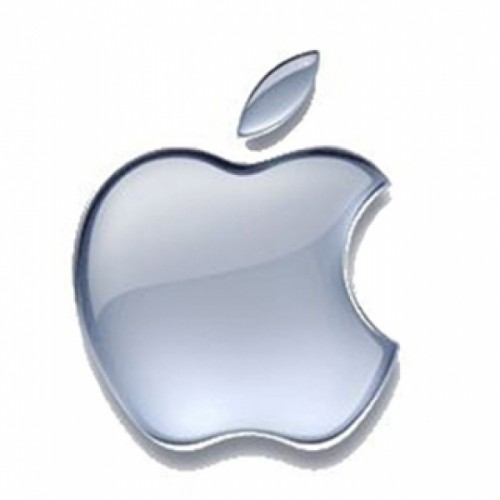
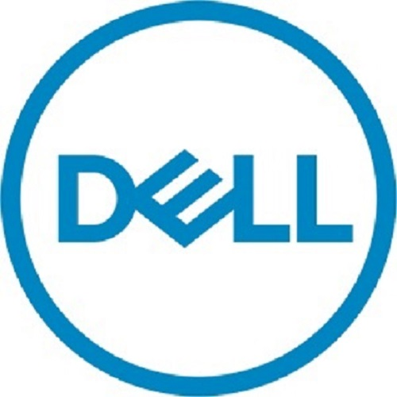

Em 1998, dois estudantes do curso de Sistemas de Informação na renomada instituição UNESA deram início aos seus estudos, no decorrer do curso, trabalhando juntos no desenvolvimento de alguns projetos foram trocando experiências inerentes as suas áreas de atuação dentro das empresas que prestavam serviços á época.
Observando que, que existiam dificuldades e que, estas se davam davam dentro dos mais variados ambientes e que, diferentes cenários exigiam uma interação das áreas envolvidas tais como: Redes, Help-Desk, Segurança, Programaçao, Panejamento de T.I...percebendo que essas interações inexistiam e, que eram responsáveis pelo atraso nos projetos e, literalmente paravam o processo, pensaram como poderiam essas áreas se interligar, minimizando "gargalos" de comunicação, otimizando tempo, aumentando a produtividade e de forma pró-ativa identificar possíveis ameaças aos projetos envolvidos.
Reuniam-se nas horas vagas, discutiam sobre os problemas encontrados no cotidiano de seus clientes e, pensavam em estratégias, desenvolvimento de soluções e projeções do futuro da empresa. A medida que surgiam novos obtáculos, recrutavam outros alunos com experiência nas áreas em questão para completar a solução e assim foram agregando conhecimento e pessoas que assim como eles queriam fazer algo diferente, inovador e, principalmente algo grande, que projetasse o nome da empresa de modo concreto no mercado.
O sonho passou a ganhar forma, a medida que as soluções eram apresentadas aos clientes, estas eram aplicadas de tal forma que, nos garantiram 100% de satisfação dos nossos clientes. Nascia ali a Tech-Bytes.
O conceito é simples, reunir em um só lugar todas as soluções intrínsecas a área de tecnologia, por mais trivial que pareça, sejam elas uma simples configuração de S.O. até a implantação de um sistema próprio. Lembre-se que nem todos, na década de 90 tinham intimidade com um computador e, muitos ainda hoje não possuem e, ter um lugar, confiável, com pessoas habilitadas em todas as áreas da T.I., prontas a atender da melhor forma possível era tão importante naquele tempo quanto é hoje.
Por esse motivo os nossos serviços são direcionados tanto do usuário básico ao mais avançado, ambos encontram na Tech-Bytes a solução descomplicada para qualquer situação.
Pense numa clínica médica, você marca uma consulta com um clínico-geral por estar com um mal-estar a dias, este lhe atende e sendo o diagnóstico inconclusivo lhe encaminha outro especialista, em outro estabelecimento, afinal, um simples mal-estar pode ter uma infinidade de motivos, este outro médico lhe solicita uma bateria de exames, e marca uma nova consulta posteriormente para que de posse dos examnes ele talvez consiga um diagnóstico, e se não solucionar? te envia a outra especialidade, outro local, outros exames...Perde-se tempo, produção e consequentemente recursos. Agora, pense no mesmo cenário, só que em um garnde hospital, onde todas as especialidades estão reunidas. Perceba o quanto você otimizou sua jornada com uma simples escolha. Não é elementar?
Por que não seguir esses paradigmas também na área de T.I.? Trazer soluções, ajudar a projetar seu negócio. Sim, você leu corretamente, muitos de nossos clientes obtiveram melhores resultados com a implantação de nossos sistemas que, com base nos dados que eram alimentados diariamente, os ajudava a tomar decisões importantes, ou ainda a melhoria dos parques tecnológicos que deram um ganho na produção. Você precisa se dedicar ao seu negócio e nós da Tech-Bytes nos dedicamos a dar fluidez ao seu negócio utilizando nossa tecnologia para deixá-lo livre para tal.
 |
 |  |
 |
 |  |
 |
 |
 |